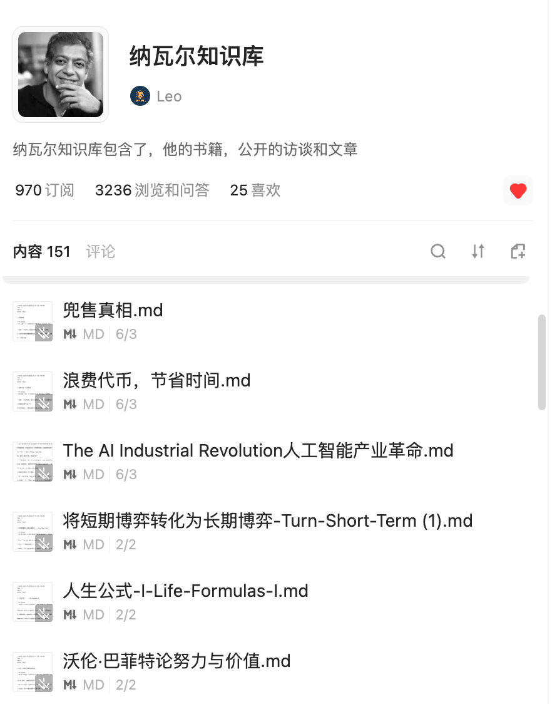

Leo Lab · 文章
纳瓦尔(深度解读)：人生开始变富的 5 个征兆
我们以前说一个人变富了，首先想到的都是结果。工资涨了，房子从老破小换成了大平层，账户里的数字变多了。可我创业这些年见过不少收入很高的人，他们每天依然忙得不敢停下来，客户消息必须秒回，项目一个接着一个，看起来进账不少，可心里却比谁都慌。
因为他们知道，只要自己停下来，收入的水龙头马上就会关掉。
这种感觉我自己也有过。2023 年关掉公司以后，我才真正意识到，过去那些看起来很热闹的营业额、会议和项目，一旦团队散了、业务停了，很多东西很快就归零了。你忙的时候觉得自己手里握着一家公司，停下来才发现，真正能留下来的东西没有想象中那么多。
纳瓦尔说，财富不是单纯的钱，也不是你的地位。财富，是那些在你睡觉时仍然能够产生价值的资产。
纳瓦尔并没有原样列出一份「人生变富的 5 个征兆」。这是我把他的财富观和自己这几年的经历放在一起之后，重新整理出来的判断。一个人真正开始变富，最早出现的变化，往往不是赚得更多，而是下面这 5 件事。
一、你开始关心留下了什么，而不只是今天赚了多少
以前做生意，我每天最关心的是成交、回款、成本和利润。这些数字当然重要，如果公司没有现金流，真的是一天都活不下去。但后来我越来越发现，只盯着当月收入，很容易把自己困在一场永远停不下来的接力赛里。
这个月赚完，下个月重新开始；这个客户交付完，再找下一个客户。每天都很忙，业务却没有因为你忙了三年，就自动变得更轻便。
有一次，我接到一个客户电话，对方是从我十年前参与过的一个网站上找到我的。那时我在一家移动互联网公司做 SaaS，也做过 SEO。很多具体工作我自己都快忘了，但我离开那家公司十年后，那个网站仍然会给我带来零星的客户需求。
这件事给我的触动很大。十年前做的绝大多数工作，今天已经找不到痕迹了。但当时沉淀在网站上的内容和搜索排名，却像埋在地下的一根旧水管，过了这么多年，偶尔还会流出水来。
收入是你今天挑回家的一桶水，资产是你花时间铺下去的一根管道。
人生开始变富的第一个征兆，就是你做完一件事以后，会多问一句：这件事除了给我今天的收入，还留下了什么？可能是一篇以后还能被搜索到的文章，一个能反复使用的模板，一套越来越成熟的流程，也可能是一群已经对你建立信任的人。它今天未必值钱，但它不会跟着今天一起消失。
二、你不再盲目学新东西，而是开始盘点自己已经会什么
35 岁以后，人很容易产生一种焦虑：这个世界变化太快，我是不是又落后了？AI 出来以后，这种感觉更强烈。今天学提示词，明天研究智能体，后天又冒出一个新模型。收藏夹越来越满，真正能拿出来解决问题的东西却没有实质增加。
纳瓦尔把一个人真正值钱的能力叫作「特殊知识」。这种知识不是培训班批量教出来的，也不一定有证书。它往往来自一个人过去十几年做过的事、踩过的坑、长期形成的兴趣，以及别人很难在短时间内复制的判断。
前段时间，我花了 4 个小时，问了 4 个老朋友和老客户同样两个问题：你觉得我在工作中是什么样的人？如果你遇到问题，会来问我什么？
他们的答案出奇地一致：框架思维、判断方向、商业和市场、把一团乱麻的东西理清楚。我以前一直觉得，这些算什么能力？不就是想问题吗？
但对自己最自然的东西，往往最容易被低估。因为你天天都在用，根本感觉不到它有什么特别。就像一个做了 15 年供应链的人，看一眼订单就知道哪里会出问题；一个做了 10 年销售的人，聊几分钟就能判断这个客户值不值得跟进。
所以，35 岁以后想建立第二现金流，未必需要重新学一门完全陌生的手艺。更现实的路，是先把过去十几年走过的路翻出来看一遍。别人经常来问你什么？什么事情你做起来不费劲，别人却总是卡住？你在哪些问题上，已经付过别人没付过的学费？
人生开始变富的第二个征兆，是你不再总觉得自己缺点什么，而是第一次认真看见：你已经拥有的经验，本身就是一座还没有被开发的矿。
三、你开始把脑子里的经验，变成别人能拿走的东西
有经验，还不等于有资产。如果别人每次遇到问题，都必须把你本人叫过来；如果你每服务一个客户，都要从头讲一遍；如果你离开现场，所有方法就跟着失效，那么这份经验仍然锁在你的时间里。
我以前也总觉得，要做产品就得有一套完整课程、有社群、有几十页 PPT，最好再搭一个漂亮的网站。后来才发现，最早的产品可能没有那么复杂。它可以是一张诊断表、一份清单、一个案例库，也可以是一篇真正把问题讲透的文章。
我现在不断整理 Obsidian 知识库、整理知识卡片、洞见卡、写公众号，本质上都在做同一件事：把脑子里那些零散的判断，一点点搬出来。

以前想到一个问题，跟朋友聊完就过去了。现在我会把它写下来，跟过去的经验连在一起，再看看能不能变成一套别人也能使用的方法。一篇文章阅读量可能不高，一张卡片暂时也不会带来收入。但当这些东西越来越多，它们就不再是一次表达，而是开始组成一个系统。
文章可以继续带来读者，卡片可以变成课程和工具，读者的问题又会反过来帮助我完善产品。原来散落在脑子里的经验，慢慢长出了可以被重复调用的形状。
人生开始变富的第三个征兆，是你不再满足于「我会」，而是开始追问：我怎么把这件事变成一份别人可以独立使用的东西？经验一旦能够脱离本人被保存、复制和交付，才第一次有机会变成资产。
四、你不再只是用 AI 干得更快，而是用它减少下一次重复劳动
现在很多人说，AI 能提高十倍效率。我对此有一点不同的看法。如果一个人以前一天接一单，现在用 AI 一天接五单，看起来效率提高了，但他依然要不停接单、不停交付。一旦停下来，收入照样归零。
这只是把跑步机调快了，并没有离开跑步机。
纳瓦尔讲过几种杠杆：资本、人力、代码和媒体。对普通人来说，代码和媒体最特别，因为它们可以被反复复制，而复制成本又很低。一段程序可以同时服务很多人，一篇文章可以被读很多次，一段视频发出去以后，不需要作者站在每个读者面前重新讲一遍。
AI 真正重要的地方，是它让普通人第一次可以用很低的成本，调用过去只有公司才能拥有的杠杆。以前想把经验做成产品，需要编辑、设计、程序员和运营。现在一个人借助 AI，也能整理资料、生成初稿、搭建页面、处理用户问题，甚至完成部分自动交付。
但前提是，你不能只让 AI 替你多干临时的活。你要把它接进一个可以沉淀的系统里。我现在让几个 AI 共用同一个 Obsidian 知识库，就是因为我不想每换一个工具，都从头介绍一次自己。正式规则、写作风格、项目状态和已经确认的判断，都留在同一个地方。AI 可以换，入口可以换，但以前积累的东西不会跟着清零。
这才是我理解的杠杆。不是今天干得更快，而是今天做完以后，下一次不必重新开始。
人生开始变富的第四个征兆，是你考虑问题的方式，从「怎么多做一点」，慢慢变成：怎么让同一份劳动，多产生几次结果？
五、你不再到处找风口，而是选定一场能玩很多年的游戏
纳瓦尔有一句话，我很喜欢：人生中所有真正的回报，都来自长期游戏中的复利。财富是这样，知识是这样，信任也是这样。
很多人不是不努力，而是每隔几个月就换一次牌桌。公众号做了三个月没起色，去拍短视频；短视频没爆，又想做直播；看到别人用 AI 做网站赚钱，马上把之前的东西全部扔掉。每次换方向的时候，我们都觉得自己在抓新机会，但过去积累的内容、经验和信任，也跟着一次次被清空了。
我之前也走过不少弯路。做过公司，研究过投资，折腾过知识库，也试过不同的内容方向。单独看，每一段好像都不挨着。直到最近，这几条线才慢慢交汇到一起：过去的创业和商业经验，解决的是现实问题；投资让我理解时间和复利；知识库负责把经验沉淀下来；AI 和内容，则让这些经验可以被放大。
所以，我现在想做的事情越来越清楚：帮助 35 岁以上有经验的人，用 AI 把过去十几年的经验，变成工资之外的第二条现金流。
文章怎么写可以调整，工具怎么用也会变化，产品还需要不断试。但这个核心问题，我愿意做很多年。人生开始变富的第五个征兆，是你不再天天寻找「最快能赚到钱的机会」，而是选定一个值得长期积累的问题，然后让今天做的事情，能够接在昨天后面。
写在最后
我们总以为，人生变富会有一个很明确的时刻。可能是某个月收入突然翻倍，某笔投资涨了很多，或者终于买下了一套房。但现在我越来越觉得，真正的变化在那些结果出现以前，就已经发生了。
你开始关心留下什么，而不只是赚到什么；开始盘点自己的经验，而不是盲目追逐新技能；开始把脑子里的东西做成文章、模板和产品；开始借助 AI 和内容减少重复劳动；也开始愿意在一个方向上，安安静静地积累很多年。
这 5 个征兆的背后，其实是同一件事：你的收入，正在一点点摆脱对本人时间的绝对依赖。
我们当然不需要明天就辞职，也不需要马上做出一门完整课程。先从过去十几年里，你反复解决过的一个小问题开始。把它写下来，整理成一张清单，做成一份模板，交给一个真正需要它的人。看看他能不能少走一点弯路，也看看这份经验离开你以后，能不能独立产生价值。
先铺下第一小段管道。